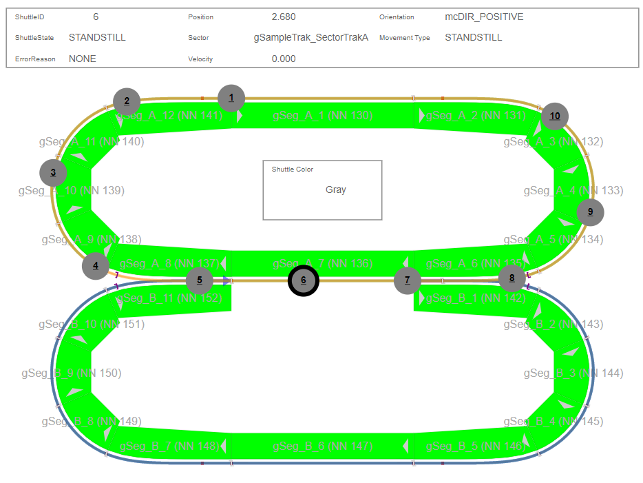

Enabling Shuttles
To enable shuttles, a few actions will need to be taken to ensure proper functionality:
<Binding mode="twoWay">
<Source xsi:type="opcUa" refId="::TrakDiag:paperCore.SvgTransform" attribute="value" samplingRate="fast"/>
<Target xsi:type="brease" contentRefId="trakmapContent" widgetRefId="paperTrakMap" attribute="transform" />
</Binding>
It is recommended to use the default fast sampling rate of 100ms found in the Config.mappviewcfg file.

After completing these steps, shuttles should show on the paper widget in a similar way to SceneViewer

Enabling Shuttle Color
To enable shuttle color, a few actions will need to be taken to ensure proper functionality:

As this example structure has the Color offset by the ID variable, we need to inform the paper core of this offset. And here is the offset needed to get the correct color value:
paperOptions.Color.Offset := SIZEOF(UDINT);
After completing the above steps, shuttles should now have color enabled

Shuttle Performance
It is important to note, the TrakPaper widget can not and will not be able to replace the speed and precision of shuttle movements that exist inside Scene Viewer. That being said, there are some things you can do to try and increase the preformance out of the system:
1. Tweak the transition time inside the paper core

Increasing this value above the default of 100 to 200 will help for large shuttle count systems. The trade off here is that the shuttle may not follow it's exact path at higher speeds and changing directins (diverts, curves etc)
Custom Shuttle Status Widget
Add the SegmentStatus widget into your content wherever you desire. Connect the TrakDiag:paperCore.ClickData.Shuttle.Data.ShInfo variable to the widget. Also, connect the TrakDiag:paperCore.ClickData.Shuttle.Valid variable to the visible property of the widget. The shuttle data also outputs the axis of the clicked shuttle in TrakDiag:paperCore.ClickData.Shuttle.Data.Axis.
If TrakDiag:paperCore.ClickData.Shuttle.Valid is true, then the Axis is valid and is able to be used as an input in function blocks. If the axis is not valid, then a page fault may occur if that address is attempted to be accessed. Only use the shuttle axis output when valid is true!
Shuttle User Data Example
Trak Paper Core includes an example widget to display custom user data in a similar manner to the shuttle and segment info widgets.

In the cyclic task of TrakDiag, the shuttle user data of a shuttle is accessed on the positive edge of a valid shuttle identification:
//Fetch ShuttleUserData Example
IF EDGEPOS(paperCore.ClickData.Shuttle.Valid) THEN
MC_BR_ShCopyUserData_AcpTrak_0.Axis := ADR(paperCore.ClickData.Shuttle.Data.Axis);
MC_BR_ShCopyUserData_AcpTrak_0.Execute := TRUE;
MC_BR_ShCopyUserData_AcpTrak_0.DataAddress := ADR(ShuttleUserData);
MC_BR_ShCopyUserData_AcpTrak_0.DataSize := SIZEOF(ShuttleUserData);
MC_BR_ShCopyUserData_AcpTrak_0.Mode := mcACPTRAK_USERDATA_GET;
END_IF
The example shuttle user data widget uses the resulting ShuttleUserData as an input and ties its visible property to the valid shuttle variable.
<Binding mode="twoWay">
<Source xsi:type="opcUaComplexObject" refId="NS6|String|Diag::TrakDiag:ShuttleUserData" />
<Target xsi:type="brease" contentRefId="trakmapContent" widgetRefId="ShuttleUserDataExample1" attribute="userData" />
</Binding>
<Binding mode="twoWay">
<Source xsi:type="opcUa" refId="NS6|String|Diag::TrakDiag:paperCore.ClickData.Shuttle.Valid" attribute="value" />
<Target xsi:type="brease" contentRefId="trakmapContent" widgetRefId="ShuttleUserDataExample1" attribute="visible" />
</Binding>
The example widget can be expanded by the user by adding to the defined ShuttleUserData type and adding more outputs to show the desired data.